五子剑系列讲座之一【五子棋入门】
#1 五子剑系列讲座之一【五子棋入门】 作者：有志青年 发表时间：2007-12-7 13:33:22
注：五子剑五子棋系列讲座教程出自掌棋盟论坛，版权归原作者本人及掌棋盟论坛所有，未经许可，请勿私自转载。爱五子棋网站已获授权。
下棋这几年，飘飘零零的真正踏实在下棋的时间并不多，利用空闲的几天写下个人的一些经
验，希望可以对棋友有所帮助！
我认为下棋最重要的是态度和方法，你对五子棋的热爱程度以及学棋时所用的方法是提高
的关键！
阅读的顺序为：
五子棋初级→五子棋初级花月→五子棋初级蒲月→五子棋初级习题→
五子棋中级→五子棋中级云雨月→五子棋中级寒星→五子棋中级银月→五子棋中级习题→
五子棋ＶＣＦ习题集→五子棋高级
所有截图画面是ＬＩＢ、五子妙手３.０、ＱＱ游戏五子棋单机版能有如此多的人爱好
五子棋是最令人高兴的事，如此多的人为了同一种游戏来交流甚至痴迷！
感谢所有下五子棋的朋友，祝大家笑口常开、一生平安！
棋友：五子剑
五子棋，非常简单，直线连成五个子就赢了！如下图：
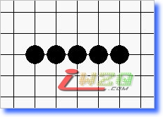
五个子自然是来自于四个，所以要先形成活四！如下图：
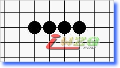
如图，所谓活四，即你现在执白无论防在这四个子的哪一头，黑方都可以下一步在另一头连成五个！
如此可见，活四的时候已经无法防守，而活四，显然也是从三个子而来，所以如果要想形成活四，必须先有活三！
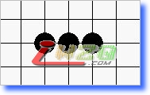
上图，这里黑棋在两边任意一边只要再落一子即可形成活四！
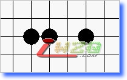
上图：这个是跳活三，黑棋在中间落一子即可形成活四！
由此看到，活三如果不理会，下一步即可形成活四胜，所以活三的时候另一方需要阻拦进行防守！
而活三自然也是由二个子形成，即活二！
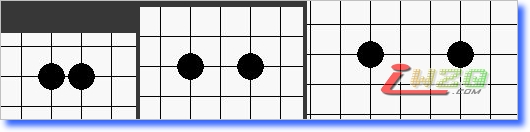
上图：这３个活二都可以形成活三，下节将详细论述！
现在请建立概念：
五子棋：连成五个子
活四：能够必定连五的四
活三：能够形成活四的三
活二：能够形成活三的二
#2 Re:五子剑系列讲座之【五子棋入门】 作者：有志青年 发表时间：2007-12-7 13:39:19
二的分类：
一、活二的形式：
根据上节，我们认识到如果要想赢棋，活二是个基本元素！现在详细介绍一下活二！
活二，即可以形成活三的二！有三种形式：
（１）连活二
此种活二可以选择形成两种活三中的任意一种！如下图
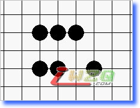
其中连活二在形成活三时可选择的点，如下图：（字母标注）
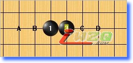
（２）跳活二
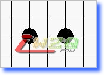
此种活二同样也可以选择形成两种活三中的任意一种！（图略）
然而在形成活三时可选择的点会减少，如下图：（字母标注）
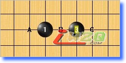
（３）大跳活二
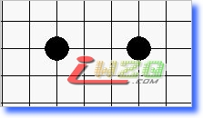
此种活二只能形成其中一种活三！如下图：
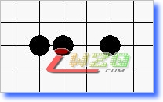
同时此种活二形成活三时可选择的点也是最少的！如下图：（字母标注）
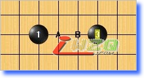
此种活二是三种活二中最弱的一种，然而由于其两点距离较远，通常容易被忽略，所以隐蔽性高！
二、眠二
眠二的意思是在下一步无法形成活三，但是可以形成眠三，构成潜在的力量！一般有以下几种形式：
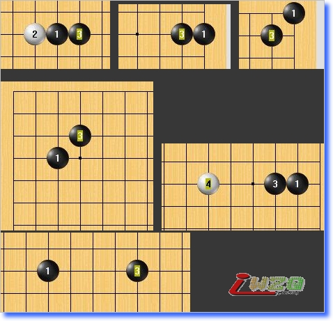
眠二在下节讲完眠三后会有深刻的认识！
三、死二
死二的意思是这个二已经帮不上任何忙了，无论在这条线上怎样借子都无法形成有用的三，如下图：
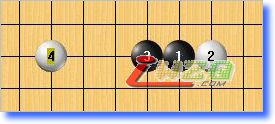
#3 Re:五子剑系列讲座之【五子棋入门】 作者：有志青年 发表时间：2007-12-7 13:47:30
三的分类：一、活三的形式
活三是在下一手即可形成活四的三，有两种形式，如下图：
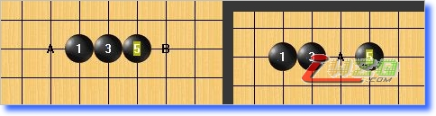
字母为可以形成活四的点！
因为活四时另一方已经来不及防守，所以在活三时就应该进行防守，下面看看活三的防守点！
活三的防守即是使对方在下一手只要无法形成活四就算防守成功！防守点如下图：（字母标注）
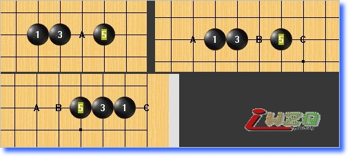二、眠三的形式
眠三即下一手无法形成活四，但可以形成冲４的三！有以下几种形式，如下图：
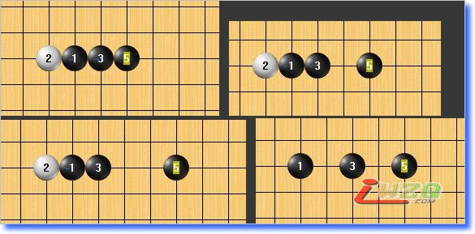
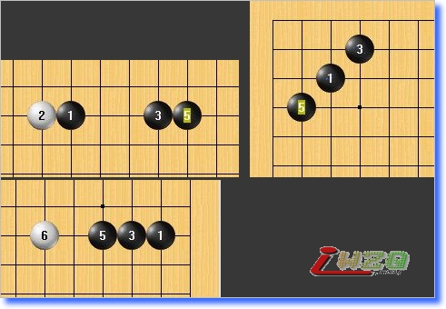
所有的眠三都只有两个防守点！
三、死三
死三即无论在这条直线上如何借子，也无法形成５连子！如下图：
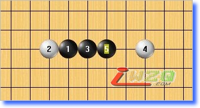
#4 Re:五子剑系列讲座之【五子棋入门】 作者：有志青年 发表时间：2007-12-7 13:50:29
四的分类：
一：活四
活四已经胜定，如果形成则此局已经要立刻结束了！如下图：
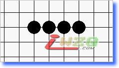
二、冲四
冲四即下一手马上就要形成五个子了，另一方如果不理会下一手马上就连五，所以冲四有绝对的先手权利，强制另一方落在马上要成五的点上！
冲四是由眠三而来，有以下几种形式：
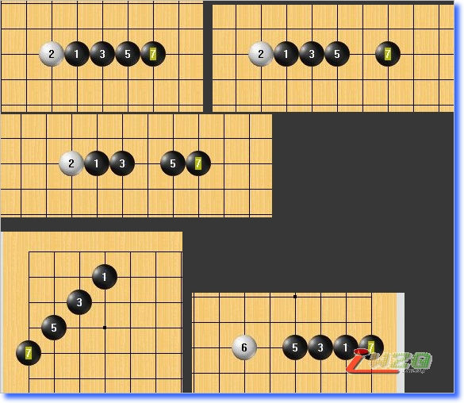
这里重点需要说明的是冲四主要的来源是眠三的发挥，所以有必要清楚各种眠三的控制能力，如下图：（字母标注）
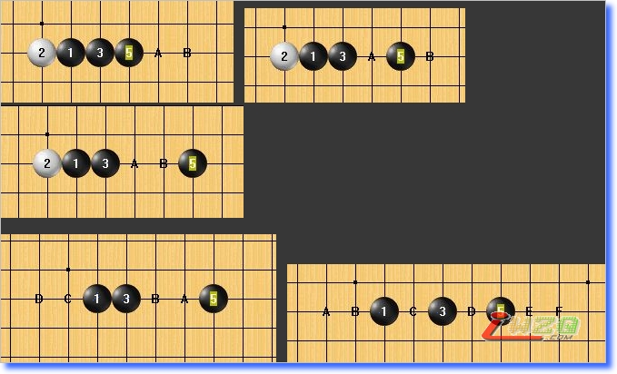
可以看出最后一种眠三所涉及的势力范围最广！因此也是最厉害的一种眠三！
三、死四
已经被封死的四，如下图：
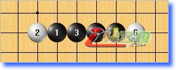
#5 Re:五子剑系列讲座之一【五子棋入门】 作者：汪洋孤舟 发表时间：2008-5-10 23:16:14
恩，这个比较初级，呵呵！应该看的人不多吧！#6 Re:五子剑系列讲座之一【五子棋入门】 作者：嚣嚣 发表时间：2008-5-24 8:11:59
o(∩_∩)o...重头看起
#7 Re:五子剑系列讲座之一【五子棋入门】 作者：摩诺 发表时间：2008-5-29 14:50:09
从头开始学习，希望多点基础的学习内容，系统的学习对我们初学者来说是最好不过的了#8 Re:五子剑系列讲座之一【五子棋入门】 作者：石投 发表时间：2008-6-13 9:00:16
脚踏实地的学
#9 Re:五子剑系列讲座之一【五子棋入门】 作者：赵吹雪 发表时间：2008-6-19 19:49:13
支持，一切从零开始
#10 Re:五子剑系列讲座之一【五子棋入门】 作者：找不着北 发表时间：2008-6-19 20:55:30
太好了 我看过一些书籍 可是都没有这里的 全面、详细。
是我们初学者的好网站！！！
#11 Re:五子剑系列讲座之一【五子棋入门】 作者：淘气包 发表时间：2008-6-21 15:43:26
谢谢哦，决心一点点的学起！#12 Re:五子剑系列讲座之一【五子棋入门】 作者：希冀 发表时间：2008-7-9 13:04:01
看了,学习
#13 Re:五子剑系列讲座之一【五子棋入门】 作者：lfzxdh 发表时间：2008-7-18 18:43:34
很好的教材~
#14 Re:五子剑系列讲座之一【五子棋入门】 作者：lfzxdh 发表时间：2008-7-30 18:07:03
=======上图对应的爱五子棋谱代码如下，以便你拆解：========
d13o15c12
======================================================二的分类:眠二的分类里有个错误
这个二也是活二:因为之后能形成活三 接着是活四
［ 有志青年 于 2008-7-31 8:49:20 时奖励此帖[金币加 20 威望加1］
#15 Re:五子剑系列讲座之一【五子棋入门】 作者：空之復活 发表时间：2008-9-1 17:16:45
一切从基础开始学起~#16 Re:五子剑系列讲座之一【五子棋入门】 作者：振作起来 发表时间：2008-9-3 19:16:02
我是新手当然要支持下啦 呵呵#17 Re:五子剑系列讲座之一【五子棋入门】 作者：无殇 发表时间：2008-9-11 14:33:46
感谢五子棋教室，更感谢有志青年，他使我成就非凡.#18 Re:五子剑系列讲座之一【五子棋入门】 作者：辰兵 发表时间：2008-10-4 23:58:05
学习交流的语言,不错啊#19 Re:五子剑系列讲座之一【五子棋入门】 作者：风雨相随 发表时间：2008-10-9 19:05:18
一切从零开始#20 Re:五子剑系列讲座之一【五子棋入门】 作者：我爱五子棋伯园 发表时间：2008-10-14 14:11:24
初学者重要基础，切忌#21 Re:五子剑系列讲座之一【五子棋入门】 作者：小裕皮皮 发表时间：2008-12-3 15:03:11
不错！！！定了！#22 Re:五子剑系列讲座之一【五子棋入门】 作者：缘来 发表时间：2009-1-8 20:18:38
=======上图对应的爱五子棋谱代码如下，以便你拆解：========
d13o1c12
 我说也不能是眠二的。。。
我说也不能是眠二的。。。
======================================================我也支持一下 从零开始吗。。
从零开始吗。。
#23 Re:五子剑系列讲座之一【五子棋入门】 作者：无关色香味 发表时间：2009-1-8 22:18:07
脚踏实地认真钻研
#24 Re:五子剑系列讲座之一【五子棋入门】 作者：彩笔飘馨 发表时间：2009-1-23 21:41:09

#25 Re:五子剑系列讲座之一【五子棋入门】 作者：五林外传 发表时间：2009-2-19 15:24:03
基础的东西往往被忽略，所谓的高手也未必能有清晰和系统的五子棋基础概念！
#26 Re:五子剑系列讲座之一【五子棋入门】 作者：飞奔狂牛 发表时间：2009-6-7 3:45:41
楼主实在是太好了。太照顾初学者的感受了。我要按照这个顺序好好的入门下！
#27 Re:五子剑系列讲座之一【五子棋入门】 作者：永不止步 发表时间：2009-6-16 16:55:27
先顶一下，然后再学习#28 Re:Re:五子剑系列讲座之一【五子棋入门】 作者：【掌棋】夏天 发表时间：2009-6-25 16:30:23
引用：
原文由 lfzxdh 发表于 2008-7-30 18:07:03 :
=======上图对应的爱五子棋谱代码如下，以便你拆解：========
d13o15c12
======================================================二的分类:眠二的分类里有个错误这个二也是活二:因为之后能形成活三 接着是活四
这里有一个边缘的问题，活三后堵一手，是无法成活四的。：）
［ 有志青年 于 2008-7-31 8:49:20 时奖励此帖[金币加 20 威望加1］
#29 Re:五子剑系列讲座之一【五子棋入门】 作者：人海偶遇 发表时间：2009-6-26 20:45:01
太好了！才找到，可以从头学学！谢谢！
#30 Re:五子剑系列讲座之一【五子棋入门】 作者：龙泉 发表时间：2009-7-9 11:55:22
好网站，认真学，必有收获
#31 Re:五子剑系列讲座之一【五子棋入门】 作者：起航 发表时间：2009-8-5 17:00:26
呵呵，刚开始学。
#32 Re:五子剑系列讲座之一【五子棋入门】 作者：倾恋 发表时间：2009-10-17 11:29:42
好啊，终于找到入门的了
#33 Re:五子剑系列讲座之一【五子棋入门】 作者：新时代耀 发表时间：2009-10-18 19:17:39
这个不错哟
#34 Re:五子剑系列讲座之一【五子棋入门】 作者：新时代耀 发表时间：2009-10-18 19:20:13
哈哈，这个还真不错啊
#35 Re:五子剑系列讲座之一【五子棋入门】 作者：夜半吹雪 发表时间：2009-10-22 12:39:31
这个简单
#36 Re:五子剑系列讲座之一【五子棋入门】 作者：像傻瓜一个的笨蛋 发表时间：2009-11-16 22:28:03
原来很多术语的图案在这里，谢谢指导！虽然会这样下，去不知道叫法！！
点滴学起！！
#37 Re:五子剑系列讲座之一【五子棋入门】 作者：沙漠孤雁 发表时间：2009-12-10 16:15:57
挺好的！谢谢#38 Re:五子剑系列讲座之一【五子棋入门】 作者：狐狸丶別荿精 发表时间：2010-2-25 17:34:25
对初学者很有用哦
#39 Re:五子剑系列讲座之一【五子棋入门】 作者：老婆爱五子连珠 发表时间：2010-3-27 22:25:26
刚刚开始学习#40 Re:五子剑系列讲座之一【五子棋入门】 作者：河南交院 发表时间：2010-5-22 21:34:59
从头学起，这很好啊，支持！~#41 Re:五子剑系列讲座之一【五子棋入门】 作者：无志气广林 发表时间：2010-5-23 7:46:54
支持！让更多的人来参与五子棋。#42 Re:五子剑系列讲座之一【五子棋入门】 作者：不求闻达 发表时间：2010-5-31 10:20:20
是我们初级爱好者者的帮手啊［ 掌棋宣传员 于 2010-8-9 23:12:47 时花20金币送鲜花一朵］
#43 Re:五子剑系列讲座之一【五子棋入门】 作者：王立喜 发表时间：2010-6-25 6:59:08

#44 Re:五子剑系列讲座之一【五子棋入门】 作者：霸王龙 发表时间：2010-8-9 8:55:15
对新手很有帮助#45 Re:五子剑系列讲座之一【五子棋入门】 作者：网速太快 发表时间：2011-5-25 12:04:41
从基础学起............#46 Re:五子剑系列讲座之一【五子棋入门】 作者：灿尔哈察苏 发表时间：2011-7-9 16:30:39
基础非常重要！#47 Re:五子剑系列讲座之一【五子棋入门】 作者：希儿 发表时间：2012-4-15 19:35:02
受教了，多谢 ！
#48 Re:五子剑系列讲座之一【五子棋入门】 作者：白蝌蚪 发表时间：2012-4-17 23:13:16
一直觉得五子棋很简单，没想到即使最基础的知识也可以讲这么多，要认真学习#49 Re:五子剑系列讲座之一【五子棋入门】 作者：梦的幻影 发表时间：2012-4-23 14:12:16
上面的叙述中，有几个地方并不完全准确：
1。上图中，中部左侧的那个二，既可以形成活三，还可以形成活四，是活二，而不是眠二。
中部右侧的那个二，准确地说，称为假活二更贴切，因为它可以形成假活三，当然也可以形成眠三，取其特殊情形——假活三来命名为假活二。
底下的二，由于距离太远，根本无法形成活三、活四，但可以形成特型三，称其为特型二，更贴切。
2。上图中，最底下的两个三，称为特型三，更为贴切。其中，左下那个白2对黑3子只在进攻方向上稍有影响，不宜将其与“眠”字混为一谈。
3。上图中，右上和左下两个三，称为假活三更贴切。左上那个图中，白2对黑3子毫无影响，可有可无，也应称为特型三，而不是眠三，不宜将其与“眠”字混为一谈。
［此帖子已被 梦的幻影 在 2012-4-23 14:14:07 编辑过］
［此帖子已被 梦的幻影 在 2012-4-23 14:15:21 编辑过］
［此帖子已被 梦的幻影 在 2012-4-23 14:31:22 编辑过］
#50 Re:五子剑系列讲座之一【五子棋入门】 作者：默默等待 发表时间：2012-9-12 19:50:18
很详细,重头学习#51 Re:五子剑系列讲座之一【五子棋入门】 作者：东方彩虹 发表时间：2012-9-19 11:35:24
这个很好，一定好好学。
#52 Re:五子剑系列讲座之一【五子棋入门】 作者：尼克 发表时间：2012-9-23 13:32:40
好贴，仔细看看学习一下。#53 Re:五子剑系列讲座之一【五子棋入门】 作者：那云那月 发表时间：2012-12-14 21:26:51
学习了！非常感谢！#54 Re:五子剑系列讲座之一【五子棋入门】 作者：泉心泉意春春 发表时间：2013-12-10 10:14:50
“二”好像最容易被忽视……